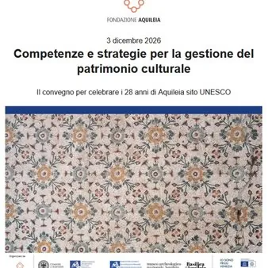

gio 3 dic
Competenze e strategie per la gestione del patrimonio culturale
Giovedì 3 dicembre, in occasione dei 28 anni dall’iscrizione di Aquileia nella World Heritage List UNESCO Fondazione Aquileia organizza, in collaborazione con gli enti e istituzioni del territorio, il convegno "Competenze e strategie per la gestione del patrimonio culturale". Il…
 Indicazioni
Indicazioni
- Costi e prenotazioni
- Costo non indicato · Prenotazione non indicata
- Programma
- Programma da verificare. Apri la fonte ufficiale per orari e possibili aggiornamenti.
- In caso di maltempo
- Nessuna indicazione specifica pubblicata.
- Note
- Acquisito automaticamente dalla fonte.
L’EVENTO
Descrizione completa
Giovedì 3 dicembre , in occasione dei 28 anni dall’iscrizione di Aquileia nella World Heritage List UNESCO Fondazione Aquileia organizza, in collaborazione con gli enti e istituzioni del territorio, il convegno "Competenze e strategie per la gestione del patrimonio culturale".
Il convegno si svolgerà alla Cantina Ca'Tullio (via Beligna 41, Aquileia) e sarà reso accessibile grazie al servizio di interpretariato simultaneo in Lingua dei Segni Italiana (LIS). L'ingresso è gratuito senza prenotazione .
La giornata prosegue poi a Palazzo Meizlik per la visita con i curatori alla mostra "Il Vangelo di Marco" (su prenotazione) e al Museo archeologico nazionale di Aquileia per l'inaugurazione di “Mirabilia. Capolavori a confronto” (su prenotazione).
PROGRAMMA
Maggiori informazioni e aggiornamenti sul sito fondazioneaquileia.it
Convegno "Competenze e strategie per la gestione del patrimonio culturale"
📍Cantina Ca'Tullio, via Beligna 41
9.00 / Welcome coffee
9.30 / Saluti istituzionali
9.45 - 10.30 / Sessione 1
La cultura come leva di sviluppo. Scenari e direttrici di intervento
L’evoluzione dei pubblici e dei consumi culturali, il digitale e l’intelligenza artificiale aprono nuove possibilità per chi gestisce il patrimonio. A partire da Aquileia e attraverso casi italiani e internazionali, l’intervento esplora come un sito UNESCO possa contribuire allo sviluppo del territorio, rispondendo alle esigenze di chi lo visita e di chi ci vive. Il percorso va dalla domanda all’offerta, attraverso le scelte organizzative.
Modera: Elena Commessatti, giornalista e scrittrice
Interviene: Stefano Monti, economista
10.30 - 11.15 / Sessione 2
Radici locali, orizzonti globali. Il patrimonio UNESCO di Aquileia tra governance, competenze e impresa
Aquileia, patrimonio UNESCO dal 1998, come laboratorio di risposte alle grandi sfide globali: l’inclusione, il cambiamento climatico e un turismo sostenibile. Una governance condivisa, nuove competenze e alleanze con le imprese del territorio fanno della tutela del passato un motore di sviluppo e un modello replicabile.
Interviene: Marco Valle, Head of Domain Innovation in Culture, Society and Public Administration di Fondazione LINKS
11.15 / pausa
11.45 - 12.15 / Sessione 3
Cultura e Impresa: presentazione del progetto “Creattivo #8 Upcycling in Domus”
Creattivo #8 promuove i valori della sostenibilità ambientale e della relazione sociale attraverso il tema dell’Upcycling, dal lontano passato di Aquileia romana alla nostra contemporaneità. Un progetto che, per proporsi in scena nella Domus di Tito Macro di Aquileia, attraversa in modo produttivo la Regione entrando nelle fabbriche, nei laboratori artigiani e creativi e nella Scuola Mosaicisti del Friuli al fine di produrre oggetti di scena e costumi utili a un nuovo spettacolo teatrale, poi riversato in un cortometraggio che lo contestualizza nel work in progress del suo backstage.
Modera: Sabrina Zannier, ideatrice e direttrice artistica di Maravee Projects
Intervengono:
Roberto Corciulo, Presidente di Fondazione Aquileia
Gian Piero Brovedani, Direttore della Scuola Mosaicisti del Friuli
12.15 - 13.00 / Sessione 4
Le persone al centro.
Evoluzioni necessarie per la gestione dei siti UNESCO.
Le organizzazioni sono fatte di persone che parlano alle persone. Mettere al centro chi visita un sito UNESCO richiede di ripensare i servizi e il modo in cui lavora chi li progetta e li realizza. L’intervento approfondisce le competenze e le pratiche organizzative che possono rendere l’offerta più attrattiva e far emergere professionalità e competenze diffuse sul territorio.
13.15 - 14.30 / chiusura convegno e light lunch
15.00 - 16.30
Visita con i curatori alla mostra “Il Vangelo di Marco. Sette Secoli. Tre Frammenti. Un racconto europeo.”
📍Palazzo Meizlik, via Patriarca Popone 7
Considerato uno dei libri sacri più importanti dell'Europa medievale, parte di un Evangeliario della Chiesa di Aquileia scritto nel VI secolo, il Vangelo di Marco fu venerato dal Medioevo come autografo dell'Evangelista. Smembrato in tre parti, ora è di nuovo insieme dopo settecento anni. La mostra è promossa e organizzata da Fondazione Aquileia.
Prenotazione obbligatoria a: eventi@fondazioneaquileia.it
17.00
Inaugurazione di “Mirabilia. Capolavori a confronto”
📍Museo archeologico nazionale di Aquileia, via Roma 1
La terza edizione del progetto Mirabilia. Capolavori a confronto prosegue il dialogo avviato dal Museo archeologico nazionale di Aquileia con importanti istituzioni museali italiane. L’iniziativa propone un ciclo di appuntamenti espositivi dedicati a opere di particolare pregio e straordinario stato di conservazione, capaci di aprire nuove prospettive di lettura sulla collezione aquileiese e di suggerire inediti percorsi di scoperta. Protagonista di questa edizione è la preziosa coppa in vetro intagliato, concessa in prestito dal Museo archeologico di Villa Mirabello di Varese, attorno alla quale si sviluppa una riflessione sulle diverse vicende che concorrono alla formazione e all’incremento delle raccolte museali.
Partecipazione gratuita su prenotazione obbligatoria a: drm-fvg.comunicazione@cultura.gov.it
IL PROGRAMMA
Programma e orari
Appuntamenti raccolti dalle fonti elencate. Dove manca un orario, non è ancora disponibile in questa scheda.
Programma pubblicato
- 9.00 / Welcome coffee
- 9.30 / Saluti istituzionali
- 9.45 - 10.30 / Sessione 1
- 10.30 - 11.15 / Sessione 2
- 11.15 / pausa
- 11.45 - 12.15 / Sessione 3
- 12.15 - 13.00 / Sessione 4
- 13.15 - 14.30 / chiusura convegno e light lunch
- 15.00 - 16.30
INFORMAZIONI UTILI
Prima di partire
- Controllare la fonte prima di partire.
ORGANIZZAZIONE